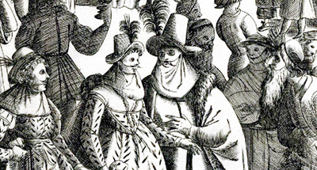

El carnaval fue introducido en Buenos Aires por lo españoles. Una celebración pagana pero de origen cristiano, vinculada a los días previos a "limpiar la carne", que desemboca en la prohibición religiosa de consumirla durante los cuarenta días que dura la cuaresma.